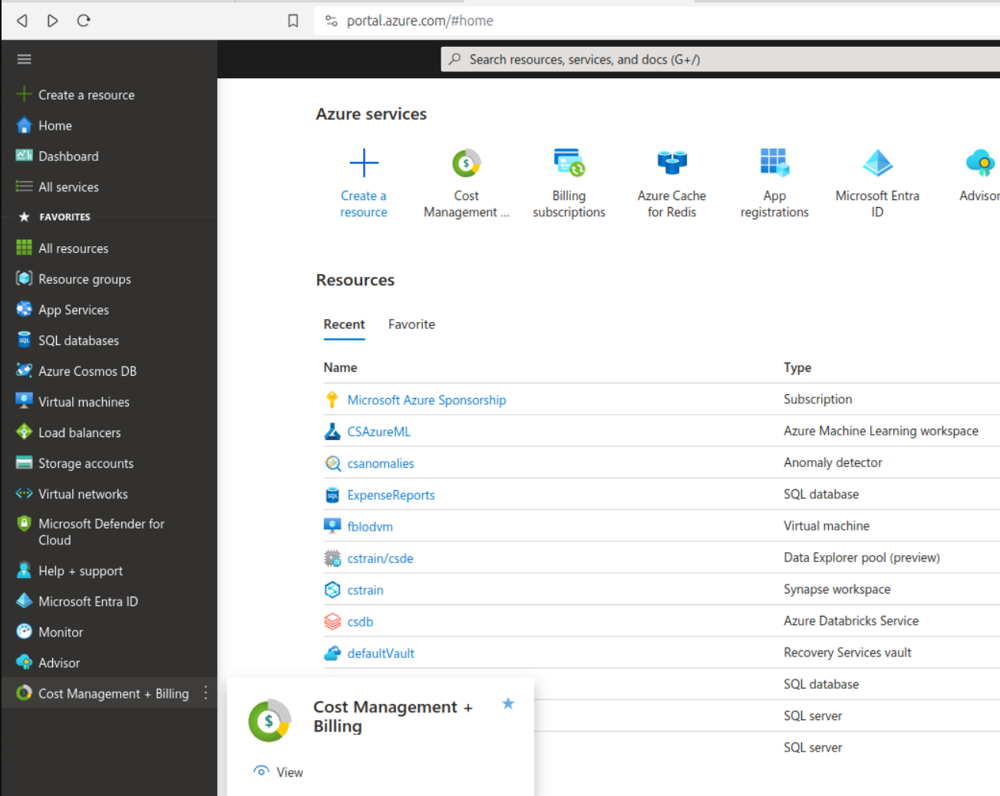
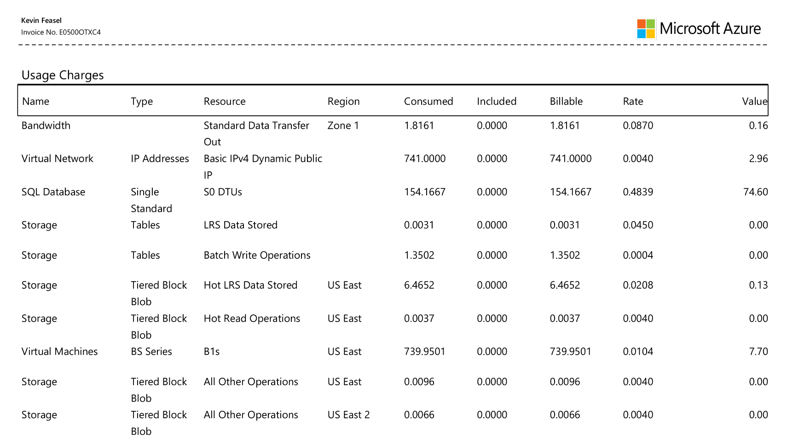
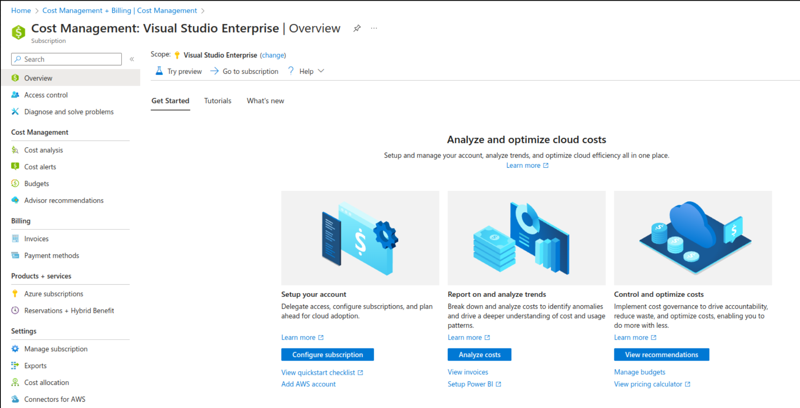
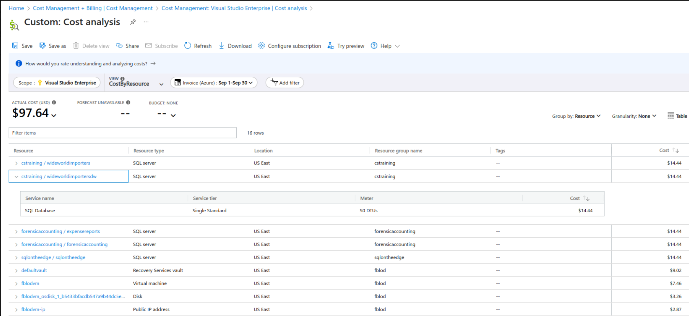
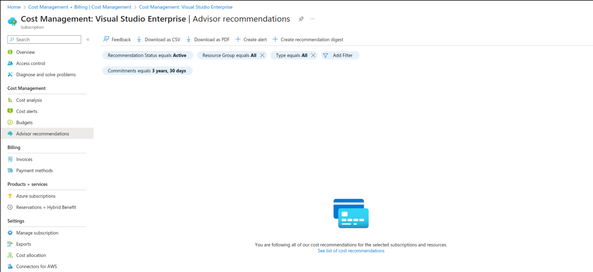

Saving Your Wallet from the Cloud
Kevin Feasel (@feaselkl)http://CSmore.info/on/wallet
Who Am I? What Am I Doing Here?


Motivation
Today's talk will give you an idea of the cloud pricing model, using Microsoft Azure for examples.
We will get an idea of how much services may cost, look at ways to save money in the cloud, try it out on a reference architecture, and review budgeting and cost alerting options in Azure.
A Quick Note
This talk is a companion talk to Getting Stuck in the Cloud (https://csmore.info/on/thecloud), where I provide an introduction to cloud terminology and offerings.
This talk assumes you are familiar with key cloud concepts like IaaS/PaaS/SaaS and have some idea of the Azure ecosystem.
Agenda
- Pricing in the Cloud
- How Much Will My Stuff Cost?
- Saving Money in the Cloud
- Scalable Web Application
- Budgeting and Alerting
The Billing Model
Cloud providers generally use a pay-for-use model with monthly billing.
With the move from rented virtual machines (IaaS) to platform services (PaaS) to serverless/functional applications, this is looking more and more like mainframe pricing during the 1970s and 1980s.
The Billing Model
The pay-for-use model is an Operating Expenditures (OpEx) billing model.
On-premises hosting is typically financed via Capital Expenditures (CapEx).
A Finance Fight!
| Criterion | CapEx | OpEx |
|---|---|---|
| Intent | Buying a fixed asset | Daily operating expenses |
| Longevity | Measured in years (multiple tax years) | "Day-to-day" expenses (in 1 tax year) |
| Depreciation / Amortization | Draw down X% of the total cost each year of "useful life" | No amortization allowed |
| Budgeting | Typically requires negotiation and long-term planning | Easier for single decision-maker to budget |
| EBIDTA | No negative impact | May have negative impact |
Summarizing CapEx vs OpEx
CapEx tends to be harder to push through and can be a risk if the hardware you purchase becomes insufficient for the job before its depreciation period (typically 5 years) expires. CapEx is more "fixed expenditure" but gets removed when calculating EBIDTA (and C-levels like that!).
OpEx is easier for a single business decision-maker (like a CIO) to approve and spending is much more flexible. It does count against EBIDTA, however.
The Cost of Everything
With cloud providers, almost everything has a price.
- Data ingress? Usually free
- Data egress? Pay
- Data storage? Pay
- Compute? Pay
- Network utilization? Pay
- High availability? Pay
- Faster performance? Pay
- Running a dev or test solution? Pay*
That said, some services are free or have free tiers.
Agenda
- Pricing in the Cloud
- How Much Will My Stuff Cost?
- Saving Money in the Cloud
- Scalable Web Application
- Budgeting and Alerting
Diving into the Pricing Calculator
The Azure Pricing Calculator is available at https://azure.microsoft.com/en-us/pricing/calculator/.
Although it can be confusing, it will be your best bet to understand how much a service will cost you.
Pricing Calculator

Selecting a Product

Filling in Details

Review and Save/Export

Outside the Calculator
Note that licensing for things such as the Power Platform (Power Apps, Power Automate, Power BI, etc.) is outside the scope of the pricing calculator. You will need to track that separately.
Also, for items which are in public or private preview, there is no calculator information, even if the service itself has pricing details laid out.
Is This Really Cheaper than On-Prem?
It depends!
- If your data center is really expensive, public cloud is probably cheaper
- If you have extreme hardware requirements, then probably not (and they may not have appropriate offerings)
- Lift-and-shift is almost definitely more expensive in the cloud
- If you have data in multiple geographical regions, moving to a public cloud is often cheaper
- Even if it is cheaper, it takes time and effort to optimize your apps for the way the cloud works!
The Azure Bill
You'll receive a monthly bill from Azure. You can also review this in detail in the Cost Management + Billing blade in Azure.
Reviewing the Bill
You'll receive a monthly bill from Azure. You can also review this in detail in the Cost Management + Billing blade in Azure.
Cost Management
You'll receive a monthly bill from Azure. You can also review this in detail in the Cost Management + Billing blade in Azure.
Cost Analysis
Azure also provides a daily analysis of costs which you can drill into to learn more about which services are costing you the most money.
Cost Advisor Recommendations
Azure can also provide automatic recommendations for saving money.
Agenda
- Pricing in the Cloud
- How Much Will My Stuff Cost?
- Saving Money in the Cloud
- Scalable Web Application
- Budgeting and Alerting
Reserved Capacity
Azure typically offers three separate models for pricing: pay-as-you-go (PayGo), one-year reserved, and three-year reserved. Typically, 1-year reserved is 30-40% less expensive than PayGo and 3-year reserved is 50-70% less expensive.
Reserved Capacity
Choose PayGo if you use a service less than 30-40% of the time or want to try out a service.
Choose 3-year reserved if you use a service near 100% of the time, are willing to make a 3-year commitment, and need to amortize the expenditure as CapEx.
Choose 1-year reserved if you use a service near 100% of the time but aren't willing to make a 3-year commitment.
Hybrid Benefit
Azure Hybrid Benefit allows you to use on-premises, licensed versions of certain software in Azure. This includes Windows, SQL Server, and RedHat & SUSE Linux.
With SQL Server in particular, you can use Hybrid Benefit to migrate to Azure VMs in IaaS as well as Azure SQL Database and Azure SQL Managed Instance.
You cannot use the same license on-prem or in the cloud, though there is a 180-day "concurrent use" right to help with migration.
Dev/Test Subscriptions
For development and testing workloads, you can create a Dev/Test subscription as part of your Visual Studio subscription.
With Dev/Test pricing, licensing costs are removed. This makes Windows VMs as inexpensive as CentOS or Ubuntu Linux VMs, removes licensing costs for Azure SQL Database, and provides discounts for services like Azure App Services.
This is, of course, only for development or test environments, not for production.
Free and Development-Grade Tiers
Certain services have Free tiers, which works well for low-use development environments. For example, IoT Hub has a Free tier which allows you to send up to 8000 messages per day.
Even for services lacking Free tiers, there are often significant price differences between Premium and Standard tiers, and for many services, the key differences are in things like High Availability and SLAs rather than differences in the development surface area.
Scaling Down
Scaling down works well in dev environments as well as "9-5" scenarios where there most of the traffic happens during a small stretch of time during the day.
At the extreme, you can shut down services like Azure Synapse Analytics dedicated SQL pools and only pay for storage. This can reduce the cost during off hours by 80-90% depending on your storage requirements.
More commonly, you can't shut off a service because it needs to be available 24/7, but can scale down overnight.
Scaling Down -- The Downsides
Scale-down takes time and can frequently cause downtime while it scales down. Scale-down works best with applications and worst with databases.
You may also be at the minimum for scaling--you don't want to change tiers when scaling, moving from Premium to Standard. Even for services where that is possible, it's typically a bad idea and can cause significant downtime.
Scale-down is typically not the best solution!
"Cloud Native" Development
"Cloud Native" development is the secret to a cheaper cloud experience. It includes:
- Microservices
- Event-driven development
- Pushing resources to the limit
- Hunting down technical debt
- Reducing dependence on virtual machines
Microservice Architecture
Microservices are small, independent, constrainted services. They receive information, do one key thing, and possibly output results.
Microservices can run on small VMs or containers, and you can sometimes host multiple microservices on the same instance.
Event-Driven Development
Along with microservices, we want to use event-driven development. Microservices receive information as events, and handle these requests on an as-received basis.
Typically, we want to use queues to handle this message-passing. This allows us to keep services independent and scale them independently. Furthermore, if we don't need immediate responses, we could even shut off services overnight and messages can remain in the queue.
Minimal Overhead
We typically over-allocate resources for on-premises VMs, as it's difficult to scale them up once created. We might have servers running on 10-20% CPU or using less than half of the allocated RAM.
In the cloud, we want to push closer to 65-75%. We don't want 100% utilization (because then the server is just spinning) but we're paying for unused resources. If you do need to scale up resources, it's typically easy to do this in the cloud--at least with applications.
Aggressively Hunting Technical Debt
It can be difficult to get the business side to let you fix technical debt because it's hard to quantify the benefit behind it.
In the cloud, certain types of technical debt are easy to classify: if it lets you scale down services or reduce the number of servers running, you have a direct measure of benefit: lower Azure costs!
Reducing Dependence on Virtual Machines
"Lift-and-shift" strategies are common for getting into the cloud, as it's easy to move virtual machines from on-premises servers into Azure. This strategy is, however, rather expensive: it's typically cheaper to host all of those VMs locally, especially for larger companies.
The most price-effective services tend to be efficient platform-as-a-service and function-as-a-service offerings like Azure Blob Storage, Event Hubs, App Services, and Azure Functions.
This is NOT Your On-Prem Solution!
Most likely, your on-premises solutions don't look anything like what I've described--though if they do look like this, you're probably a good candidate for Azure!
This doesn't mean "Don't move to the cloud," but it does indicate that you'll want to reshape services over time and plan migrations.
The Secret to a Cheaper Cloud Experience
How do we get there from here?
- Take smaller product offerings and move them up first
- Perform ruthless technical debt cleanup
- Remove external dependencies
- Change access patterns--interact through an API
- Optimize code performance and database performance
- Minimize network bandwidth utilization
- Study up on cloud architectures; they're not the same as what works on-premises
The Well-Architected Framework
Take advantage of the Microsoft Azure Well-Architected Framework (https://learn.microsoft.com/en-us/azure/well-architected/).
One of the WAF pillars is cost optimization and you can pick up great advice on how to track costs, provision resources appropriately, and get the outcomes you desire at the lowest cost.
WAF Assessments
Microsoft provides specific Well-Architected Framework assessments (https://learn.microsoft.com/en-us/assessments/azure-architecture-review/).
These are quite detailed and may take multiple people at your company several days to complete, but they will provide a great deal of insight specific to your environment.
Agenda
- Pricing in the Cloud
- How Much Will My Stuff Cost?
- Saving Money in the Cloud
- Scalable Web Application
- Budgeting and Alerting
Scalable Web Application

Initial Estimate

Initial Estimate

Optimized Estimate

Optimized Estimate

Minimalist Estimate

Minimalist Estimate

Saving Money
Summarizing how we can save money:
- Cache heavily
- CDNs are cheap--use them!
- Scale if you experience bursty behavior
- Prefer well-designed, fast functions
- Look for service overlap: Azure Front Door Standard & Premium include a CDN plus a WAF.
- Remove Azure Search + Cosmos or SQL
Agenda
- Pricing in the Cloud
- How Much Will My Stuff Cost?
- Saving Money in the Cloud
- Scalable Web Application
- Budgeting and Alerting
Create a Budget
Budgets let us know when we reach a certain level of spend.
Create a Budget
Create Cost Alerts
Cost alerts send messages when you get close to or above budget.
Create Cost Alerts
Create Cost Alerts
Spending Limits
If you have an account which uses Azure credits, spending limits are enabled by default to prevent you from owing Azure money beyond your credits. If you hit the spending limit, all services are shut off until the next billing period unless you disable the limit and set up a payment method.
Custom spending limits are not available in Azure.
Tagging and Chargebacks
For large companies or multi-client scenarios, chargeback can be important for internal or external accounting.
The easiest way to perform chargeback is to tag individual resource groups and resources with the relevant department or customer and to use the Azure Cost Management portal to create reports.
Performing chargeback within a resource, such as Azure SQL Database or a VM running SQL Server, is something you would need to control using your own accounting rules and processes.
Wrapping Up
In this talk, we looked at the billing model of the cloud, including how it fits in the "OpEx vs CapEx" debate. We reviewed the Azure pricing calculator and demystified it somewhat. Then, we looked at strategies to save money in the cloud, using two examples of Azure reference architectures to save up to 60% off the "naive" bill.
Wrapping Up
To learn more, go here:
https://CSmore.info/on/wallet
And for help, contact me:
feasel@catallaxyservices.com | @feaselkl
Catallaxy Services consulting:
https://CSmore.info/on/contact